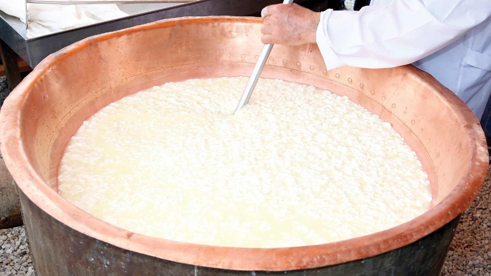
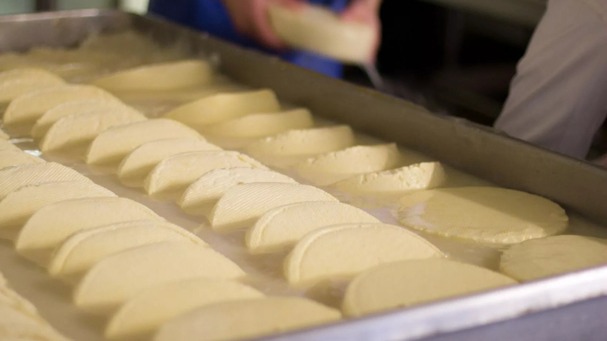
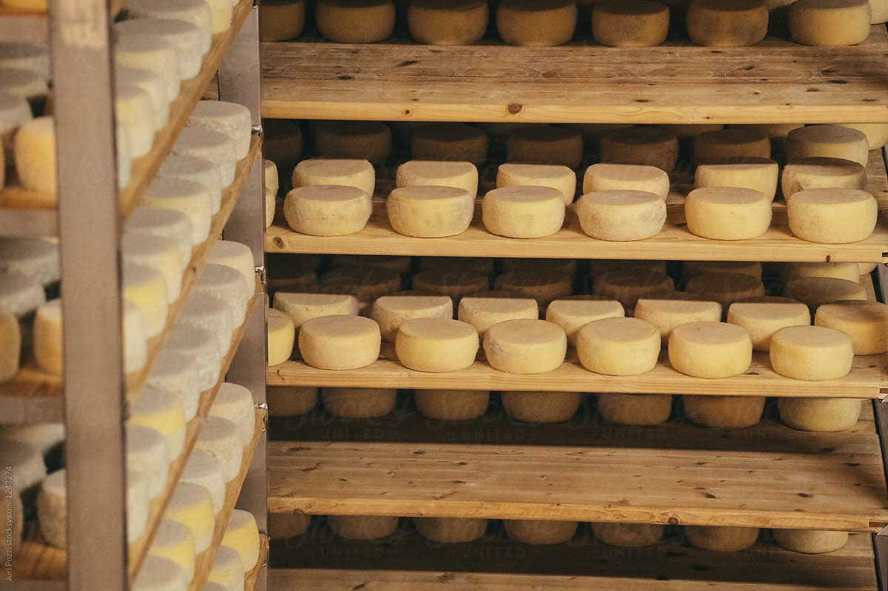

Terroir
Terroir refers to natural factors in the process of making cheese, such as geography, climate, and vegetation. Cheeses made from animals living in mountainous regions might taste more mineral-rich, while cheeses made from animals living in pastoral valleys might have a more lush and creamy texture. These differences come from the varying lifestyles of animals based on their environment, as well as the minerals and nutrients in their diets.
Raw Milk
While different animals produce different cheeses, what makes French cheese so recognizable is the usage of raw milk. Raw milk negates standard pasteurization and heat treatment, which allows for more natural, gut-healthy bacteria. This creates the richer and more dynamic flavor that French cheese is famous for. Furthermore, by avoiding the pasteurization process, the taste and texture from the terroir is even more noticeable!
Cow Milk
Cows are the most historically recent type of milk harvested for cheese. They need a relatively open pasture to graze, which can result in creamier textures influenced by the open landscape and unique terroir. Cow cheese is often less tangy than other cheeses. It contains the highest levels of monounsaturated fatty acids, which are beneficial fats associated with heart health and balancing inflammation.
Goat Milk
Goats can be raised among mountains and rock formations. Their active lifestyle in these mineral-rich environments contributes to the lowest natural fat content of any animal milk used for cheese making. This means that goat cheese is the least likely to contribute to cardiovascular risks, and it has potential gut health benefits. Goat cheese is especially tangy and has a lower component of lactose.
Sheep Milk
Sheep milk has the lowest yield but the highest amounts of butterfat and calcium. This high fat content (nearly twice as much as cow milk) and calcium creates a rich texture. It also supports heart health, reduces inflammation, and provides quick energy. Sweat is a telltale sign of sheep cheese, as they often glisten at room temperature as fat globules change from solid to liquid. If it’s sweaty, it’s ready!

Curdling
Once the milk is gathered, it is separated into curds and whey. This involves adding rennet, which coagulates proteins and causes them to cluster into gel-like structures. This preserves valuable minerals and lipids in the milk. The removal of whey leaves behind a concentrated matrix rich in elements. Curd quality can influence cheese moisture, yield, texture, and flavor due to varied fat and protein retention levels. The milk takes about an hour to solidify completely.

Moulding & Salting
After the curdling stage, the curd is placed into different moulds depending on the desired shape of the cheese. Then, the curd is drained several times and left to dry overnight. Lastly, after being removed from their moulds, the curds are salted to increase flavor and increase shelf life. The process from curdling to salting can take anywhere from a few hours for fresh cheeses to a few days for harder varieties.
